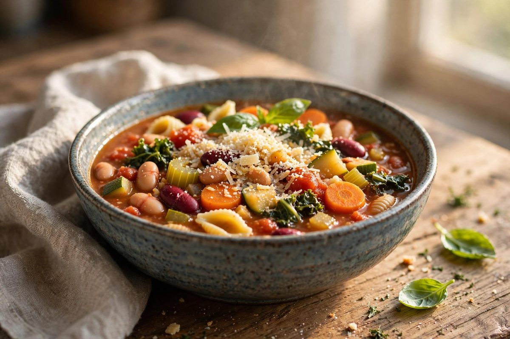

Home › Guides
Minestrone: The Italian Vegetable Soup for Every Season

Minestrone is Italy's most democratic soup. There is no single recipe, because it was invented to use whatever vegetables were in season and whatever was left in the kitchen. That is its strength: it is a method, not a formula, and it changes with the seasons. Learn the method once, and you can make minestrone all year.
The base
Every minestrone starts with a soffritto: onion, carrot, and celery, finely chopped and cooked gently in olive oil until soft and sweet, about ten minutes. This base gives the soup its depth, so do not rush it. Add garlic for the last minute, then a spoonful of tomato paste and a tin of chopped tomatoes.
Add stock, water, or a mix of both. A vegetable stock is traditional, but a light chicken stock works too. Season lightly at this stage, because the soup will reduce and the beans and pasta will add salt.
The vegetables and beans
Add hard vegetables first, such as potato, carrot, and squash, then softer ones later, such as courgette, green beans, and peas. Cabbage, chard, and spinach go in near the end so they keep their colour. Use what is in season, and cut everything into small, even pieces so the soup eats well with a spoon.
Beans are essential. Borlotti beans are the classic choice, but cannellini or chickpeas work too. Use tinned beans, rinsed, or dried beans soaked and cooked separately. Add them halfway through cooking so they hold their shape.
Pasta, rice, and the finish
Small pasta such as ditalini, orzo, or broken spaghetti is traditional, added in the last ten minutes so it does not overcook. Rice is used in some regions instead. Add the pasta only to the amount you will eat at once, because pasta left in the soup absorbs liquid overnight and turns soft.
Finish the soup with a drizzle of good olive oil, a handful of grated Parmesan, and fresh basil or parsley. A spoonful of pesto stirred in at the end is a classic touch in Liguria. Serve with crusty bread and more Parmesan on the table.
Minestrone through the seasons
In spring, minestrone is light and green, with peas, asparagus, and artichokes. In summer it is full of tomatoes, courgettes, and green beans. In autumn it turns to squash, cabbage, and borlotti beans. In winter it is hearty, with potato, kale, and barley.
Whatever the season, the method is the same. Start with soffritto, add stock, add vegetables in order of cooking time, add beans and pasta, and finish with oil and cheese. Minestrone keeps for three days in the fridge and tastes better the next day.
Minestrone as a meal
Minestrone is a soup, but it can also be a meal. Serve a large bowl with crusty bread, a chunk of Parmesan, and a drizzle of olive oil, and it is enough for lunch or a light dinner. Add a boiled egg or a piece of cheese on the side, and it is a complete meal.
Minestrone is also a good make-ahead dish. Cook a large pot, let it cool, and freeze it in portions without the pasta. When you reheat it, add freshly cooked pasta and a spoonful of pesto. It tastes better the next day, and it is one of the most economical meals you can cook.
Frequently Asked Questions
What vegetables go in minestrone?
Whatever is in season. Onion, carrot and celery form the base; add potatoes, beans, tomatoes and leafy greens according to the season.
Should I add pasta to minestrone?
Small pasta is traditional, but add it only to the portion you will eat now, or it will go soft overnight.
Can I freeze minestrone?
Yes, but freeze it without the pasta. Add freshly cooked pasta when you reheat it.